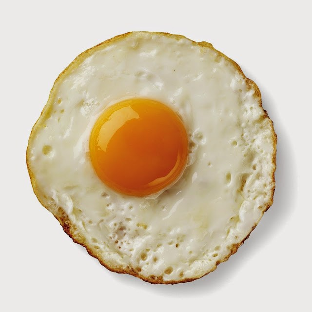

Resep Kue
Resep Telur Ceplok

Bahan-bahan:
- Mentega / minyak goreng
- 1 butir telur
- 1/3 sdt garam
Langkah-langkah
- Siapkan wajan datar / telfon
- Masukkan mentega secukupnya / tuangkan minyak sedikit kedalam teflon
- Pecahka telur di dalam teflon saat minyak belum terlalu mendidih
- Setelah minyak mendidih, tambahkan garam secukupnya diatas telur
- Tutup telfon
- Angkat telur
- Telur ceplok siap dinikmati